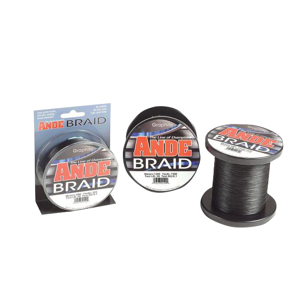

Ande Graphite Braid
Diameter chart, reel capacity & backing guide

This guide covers original ANDE Braid in Graphite from 10 to 60 lb. Blue Braid and Web Green Braid are separate listings. Check that your package matches before using these diameters for a reel-fill estimate.
- Construction
- Braided line; original Graphite AB product
- Listed strengths
- 10-60 lb
- Line type
- Braid main line
Keep the original braid identity clear
The original ANDE Braid range is a main-line option for freshwater or saltwater setups. Its thinner sizes can leave substantial spare space on a reel; choose a useful working length before adding backing. Match your package to the chart's product range, then allow enough braid for the intended fishing, fish runs and later trimming.
How much ANDE Graphite Braid will fit?
Calculated estimates, not measured fills. Stop at the reel manufacturer's fill level even if some line remains.
Ande Braid diameter chart
Original Graphite AB variants only. Retail packages carry manufacturer dual labels such as 150m/165yd and 300m/325yd; these nominal labels are not exact arithmetic conversions.
| Strength | Inches | mm | Spools (yd) |
|---|---|---|---|
| 0.004724 | 0.120 | 165, 325, 650, 1300, 3250 | |
| 0.006299 | 0.160 | 165, 325, 650, 1300, 3250 | |
| 0.007087 | 0.180 | 165, 325, 650, 1300, 3250 | |
| 0.009449 | 0.240 | 165, 325, 650, 1300, 3250 | |
| 0.012598 | 0.320 | 165, 325, 650, 1300, 3250 | |
| 0.014173 | 0.360 | 165, 325, 650, 1300, 3250 | |
| 0.016142 | 0.410 | 165, 325, 650, 1300, 3250 |
Choosing your ANDE Graphite Braid strength
Choose the Graphite test for the rod, lure and cover. The heaviest verified option here is 60 lb at 0.41 mm; check that exact test and diameter rather than treating a 65 lb label as interchangeable.
Compare the actual Graphite AB diameters: 10 lb is 0.12 mm, 20 lb is 0.18 mm and 50 lb is 0.36 mm. A matching pound-test label on another braid does not guarantee the same spool capacity.
Thin braid can create a large numerical capacity without a need for that much working line. Wind evenly and select backing from the remaining volume.
This is a source-based specification and setup guide, not a hands-on review or comparative performance test.
Want a guided recommendation?
Continue in the Setup WizardSame pound test, different diameters
At your selected strength
Loading diameter comparisons...
What changes with another line?
Nearby diameters in the line database
| Line | Strength | Inches | Difference |
|---|---|---|---|
| Loading line database... | |||
Backing, working line & leaders
Use the package as labeled
The default is the manufacturer's 150m/165yd package. This page preserves its nominal yard label; it does not claim that 150 meters converts exactly to 165 yards.
Use backing for spare volume
A selected working section may leave room on the reel. Calculate backing below it and follow the reel maker's instructions for anti-slip attachment.
Keep leaders separate
A short ANDE fluorocarbon leader is terminal material, not the backing below the graphite braid. A long topshot needs a separate volume plan.
How Much Fits on These Reels?
Estimated full-spool capacity for the ANDE Graphite Braid strength selected above, with no backing. These are calculated examples, not physical tests or recommendations for every pairing.
Loading capacity estimates...
ANDE Graphite Braid questions, answered
Is this the new Blue Braid?
No. These specifications belong to the original Graphite Braid with AB product codes. Newer named listings are not substituted.
Why is 65 lb missing?
The current official Graphite range includes 60 lb, not 65 lb. Choose from the listed Graphite tests, or check the exact specifications of a different product if your tackle plan calls for 65 lb.
Are the meter/yard labels exact conversions?
No. They are the manufacturer's nominal package labels. Check the actual package before using a working-length estimate.
Specifications & sources
Checked September 13, 2026 against the official product information linked below. Current public per-variant mm values are used. Inches are calculated as mm/25.4. The old braid chart confirms some packages but contains no diameter column. Offered specifications do not establish current stock; this is not an independent diameter measurement. Package calculations use the manufacturer-published 165, 325, 650, 1300 and 3250 yards. The corresponding 150, 300, 600, 1200 and 3000 meter package labels are independently rounded nominal labels, not precise unit conversions, and are not used as converted lengths.
Calculations use the catalog's listed inch diameters. Published inch and millimeter values may differ slightly because of rounding.
- Ande official product information Original Graphite ANDE Braid (AB product codes), not newer Blue/Web Green products. Current public variant metadata verifies mm and manufacturer-labeled meter/yard packages. 60 lb is a new verified row; old 65 lb is not relabelled.
- Ande official supporting source Original Graphite ANDE Braid (AB product codes), not newer Blue/Web Green products. Current public variant metadata verifies mm and manufacturer-labeled meter/yard packages. 60 lb is a new verified row; old 65 lb is not relabelled.